Running the GUI Editor
You can run Torque 3D's GUI Editor using one of two ways. The most
intuitive way is to use the Toolbox. Run the Toolbox, select a project,
then press the GUI Editor shortcut:
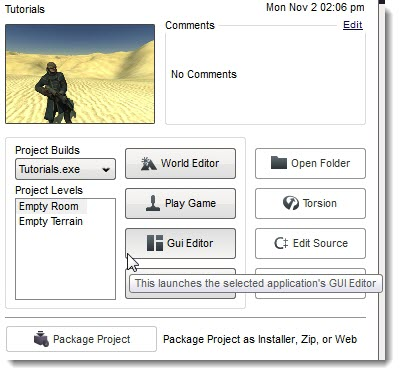
Your project will begin to load. Before the game is actually
launched, a screen will appear allowing to pick which GUI you want to
start editing:
(click to enlarge)
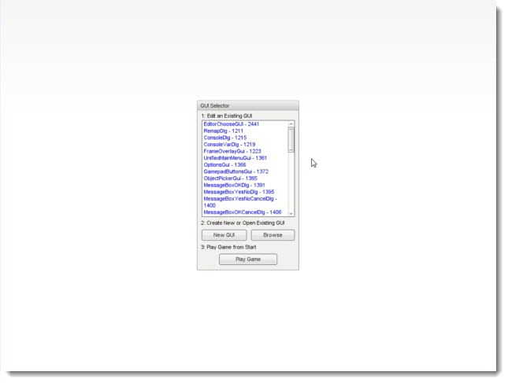
Once you have selected a starting GUI, the editor will fully
load. From here, you can edit your selection, load a different GUI, or
create an entirely new one. The alternate method to loading the GUI
Editor is to press the shortcut key while running a game: Windows users
press F10, OS X users press cmd + F10.
You can perform this action at anytime while running your game. The
same shortcut will also quit the GUI Editor, so make sure you save your
progress before you quit.
Main Editor Sections
The main GUI Editor view consists of 5 primary sections:
File Menu - Found at the very top, this is where you will
find various menus that controls global functionality of the editor,
such as creating/saving GUI files, manually locking, selecting, and
aligning controls, toggle snapping, and so on.
The Toolbar - Located just below the File Menu, this bar
contains shortcuts to the GUI Selector, resolution adjuster, and common
positioning actions (nudge, align, etc).
Control Palette - The Control Palette contains all of the
controls you can add to your current GUI. You can click a control in
the list or manually drag it to a position in the view to add it to the
scene.
GUI Tree Panel - This panel, located on the far right, contains
all of the controls that make up your current GUI. They are listed in
hierarchical tree, which is sorted by oldest to most recent (top to
bottom) and parenting (described later).
GUI Inspector Panel - This panel, found directly below the GUI
Tree Panel, is populated with all the properties that make up the
currently selected GUI control. Most of your field editing will be
performed here.
(Hover over different sections to get description)
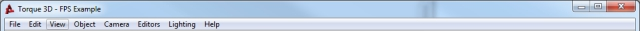File Menu: Found at the very top, this is where you will find various menus that controls global functionality of the editor, such as opening/saving levels, toggling camera modes, opening settings dialogs, and so on..', WIDTH, 400)" onMouseOut="UnTip()" >
 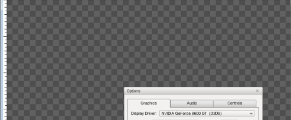GUI View: The main canvas view of your GUI.', WIDTH, 250)" onMouseOut="UnTip()" > 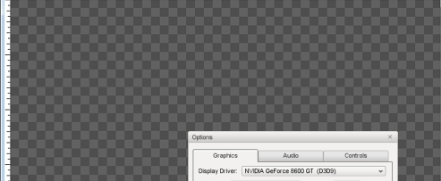GUI View: The main canvas view of your GUI.', WIDTH, 250)" onMouseOut="UnTip()" > 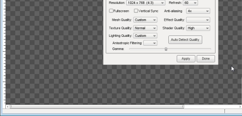GUI View: The main canvas view of your GUI.', WIDTH, 250)" onMouseOut="UnTip()" > 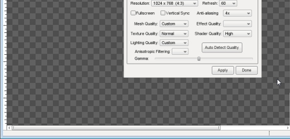GUI View: The main canvas view of your GUI.', WIDTH, 250)" onMouseOut="UnTip()" >
Menu Bar
| Menu |
Description |
| 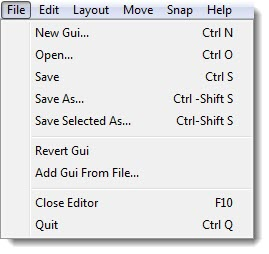 |
File Menu allows you to create, save, and open GUI files. You can also revert GUIs or load from file. |
 |
Edit Menu controls various editor actions, such as undo and redo.
The second function allows you to cut/copy/paste/delete objects you have selected.
Finally, this is the menu that allows you to perform selection and group actions, such as toggling visibility and locking. |
| 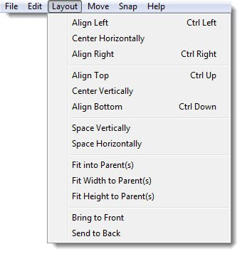 |
The Layout Menu contains actions that makes it easy for you align your GUI controls for a clean and neat appearance.
This is very useful for a complex interface with multiple controls that stack vertically or horizontally. |
| 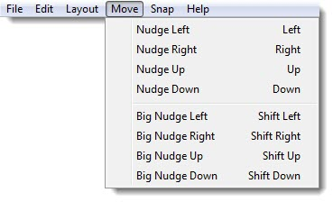 |
When you need to perform very subtle and precise movements on a GUI control, you can use the actions listed in the Move Menu.
Each nudge is assigned a shortcut, so using this menu is optional. |
| 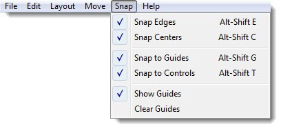 |
When
dragging GUI controls with your mouse, using the Snap Menu toggles will
cause your mouse to immediately jump to specific points (depending on
the toggle). |
| 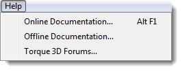 |
Contains shortcuts to documentation and forums for Torque 3D. |
Tool Bar
The most useful and preferred shortcuts for quick edits can be found
in the Tool Bar. While most of your control properties will be edited
in the Inspector, you can use the Tool Bar to perform quick positioning
actions and testing.
The first three icons toggle the editors, and are always available. The
left most icon (looks like a mountain) toggles the World Editor. The
next one (boxes) toggles the GUI Editor. The Play icon will exit the
editors and let you play through the game.
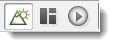
Next to the editor toggles, you will find three extremely important
settings. The first two are drop down lists and the last one is a
button toggle. These determine what you are editing and at what
resolution.

The first drop down is a list of every single GUI available
to edit, including new ones you just created. You can jump to an
individual GUI at anytime, which can be useful if you are editing
multiple GUIs that which work together.
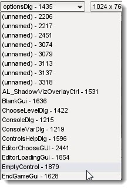
The second drop down list contains three different resolutions you can build your GUI in:
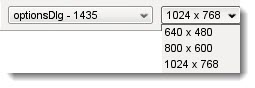
The button toggles the Control Palette, which is explained
in the next section. The next set of icons allow you to toggle the most
commonly used and important settings for snapping:
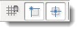
After the snapping icons, several shortcuts are available toggle the alignment of controls:
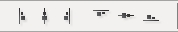
The next two icons, which look like multiple boxes attached
to lines, are used when you have multiple GUI controls selected. These
distribution toggles will equally space the GUIs you currently have
selected:

The final two icons in the the Tool Bar can move the
currently selected GUI between layers. The first button will move the
selected GUI ahead in a layer, bringing it closer to view. The second
button will start shoving your GUI behind others, obscuring it from
view:
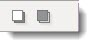
Control Palette
The Control Palette contains all of the controls you can add to your
current GUI. You can click a control in the list or manually drag it to
a position in the view to add it to the scene. There are ways to view
the list of available controls, depending on which tab you are using.
When you first toggle the Control Palette, you will see a list of the
most commonly used controls. There are quite a few controls hidden,
which are mainly used to create the Torque 3D editors. These controls
are not typically used in games, so they have been hidden. You can
click the All button to see every GUI control the engine contains.

When you click on the Categorized tab, you can get list of all the GUI controls based on their functionality:
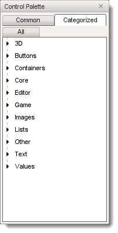
The categories are straight forward and should be an excellent way to
get to the exact controls you need to build your interface. To see what
a category contains, just click on one of the arrows or text to expand
it:
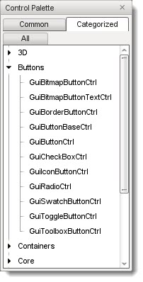
To add a control, locate it in the Palette's list:
(click to enlarge)
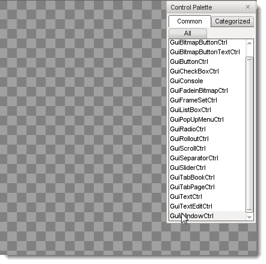
Next, click on the control and drag it to your main view using a mouse:
(click to enlarge)
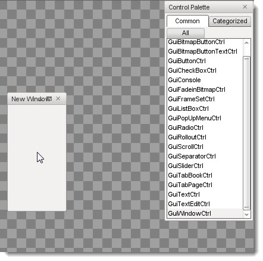
When you let go of your mouse button, you new control will anchor to the view and become your current selection:
(click to enlarge)
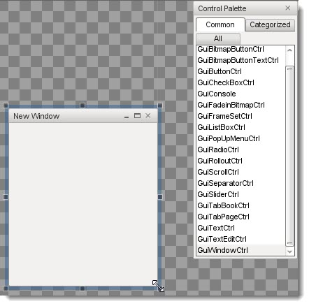
GUI Tree View
Every control added to your current GUI is kept in a sorted list. To
view this list, go to the panel on the far right and click the "GUI"
tab. This will list all of your controls in the order they were added,
the most recent at the bottom of the list. Each control has a unique
ID, and can be given a name.
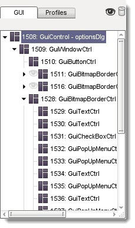
Profile Editor
In the same panel as the GUI Tree View, there is a tab called
"Profiles." Clicking this tab will present you with a list of all the
GUI profiles currently loaded by your game. GUI profiles contain data
that personalizes your controls. This will allow you tailor an
interface unique to your game.
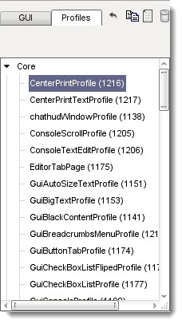
GUI Inspector
When you have a control or profile selected, the GUI inspector will
be populated with the properties that make up the selection. These are
the values that play an important role in assigning functionality to
your GUI. Most of your editing will occur here.
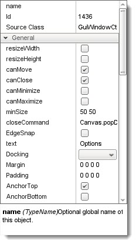
Selection and Parenting
The last portion of the interface is how controls are selected. The
following image shows the stock options GUI that ships with Torque 3D.
This consists of dozens of controls working together to make up the
audio and video options:
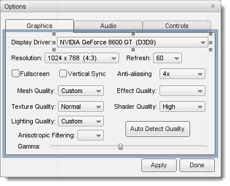
In the above image, I have selected the list box control
that shows the display driver for a video card. The current selection
is marked by six boxes surrounding the corners of the control, and
several subtle lines. However, you should notice there is a large blue
box surrounding multiple controls.
The large blue box shows the Parent control. When
a control is the "parent", it can contain multiple sub-controls. The
"children" controls will now adhere to the same behaviors as the parent
control. For example, if the parent control is set to invisible, the
children controls will become invisible as well. If the parent is
moved, all the children controls will move with it.
Conclusion
The purpose of this article was to walk you through the GUI Editor's
interface. The terms you learned will be used throughout the rest of
the documentation, and you should memorize the locations of the tools,
menus, and dialogs. More specific details will be explained in the
individual tools documentation.
|
{kind=link}
{kind=link}
{kind=link}
{kind=link}